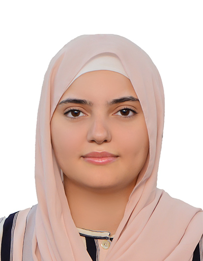

0+
Projets IA & Data construits
[ ENSAM Meknès · IADT:SI · 5ème Année ]
Étudiante en 5ème année d'ingénierie IA & Data à l'ENSAM Meknès, je conçois des systèmes d'IA complets, de l'architecture à la production. Mon stage chez Urika Cloud : SELLIGENT, une plateforme d'agent commercial IA multi-tenant fondée sur le RAG et les agents LLM, déployée en production.
0+
Projets IA & Data construits
0
Stages en entreprise
0
Système IA en production

Systèmes IA construits de la conception au déploiement
Juillet - Septembre 2026
[ PRODUCTION ]Stage de fin de 4ème année chez Urika Cloud (Meknès). Plateforme SaaS multi-tenant qui donne à chaque entreprise un agent commercial IA connecté à ses propres données : génération de devis, négociation encadrée et suivi client en langage naturel. Recherche hybride sur les catalogues produits, orchestration d'agents par graphes, et garde-fous stricts pour des réponses toujours ancrées dans les données réelles de l'entreprise. Système déployé et utilisé en production.
Octobre 2026 - Présent
[ EN COURS ]Projet d'expertise de 5ème année (en binôme). Un agent IA qui diagnostique les incidents informatiques à partir de trois entrées : captures d'écran d'erreurs lues par un modèle vision-langage, questions texte, et messages vocaux transcrits localement. Il interroge une base de connaissances par recherche hybride avec re-classement, agit via un graphe d'actions, se souvient des tickets passés et escalade vers un humain quand sa confiance est insuffisante.
Janvier 2026
[ FEATURED ]
Assistant IA multimodal sécurisé pour la gestion documentaire en entreprise. Architecture RAG hybride (dense + sparse retrieval) avec contrôle d'accès hiérarchique via ltree PostgreSQL pour prévenir les hallucinations et cloisonner les données par rôle utilisateur. Traitement de documents texte, PDF, audio et vidéo.
Mai 2026
Framework de mémoire pour agents IA qui sépare ce qu'un agent retient en trois couches : mémoire épisodique (les événements vécus), mémoire sémantique (les faits appris) et mémoire procédurale (les savoir-faire). Objectif : des agents qui apprennent d'une session à l'autre au lieu de tout oublier.
Mai 2025
Modèle de prévision de séries temporelles pour anticiper la demande électrique en Espagne en intégrant des données exogènes (météo, calendrier de jours fériés). Combinaison d'approches ML classiques et deep learning pour maximiser la précision. Dashboard interactif pour la visualisation des prévisions.
2025
Application de contrôle de bureau sans contact physique, basée sur la détection de landmarks de la main en temps réel via webcam. Permet de contrôler le curseur, effectuer des clics, régler le volume et la luminosité, ainsi que défiler dans les pages uniquement par gestes. Interface PyQt5 avec chatbot FAQ intégré.
2025
Application web de maîtrise statistique des procédés (SPC) : cartes de contrôle, règles de Nelson et alertes automatiques sur les dérives de production.
Février 2027 (objectif)
Stage de fin d'études de 4 à 6 mois, disponible dès le 15 janvier 2027. Domaines : IA, Machine Learning, GenAI, RAG, Data Engineering. Mobilité : Maroc et international.
Juillet - Septembre 2026
Conception et déploiement en production de SELLIGENT, plateforme d'agent commercial IA (RAG multi-tenant, LangGraph, PostgreSQL/pgvector, Docker, Kubernetes).
Juillet - Août 2025
Plateforme de gestion de stock en temps réel : base SQL, classification ABC des produits et approvisionnement optimisé. Livrée en production.
2024 - 2027
Intelligence Artificielle et Technologies des Données pour les Systèmes Industriels.
2022 - 2024
Mathématiques, physique et informatique.
2021 - 2022
Lycée Abdelkrim Raiss, Fès.
Ingénieure en devenir, formée à l'exigence des Arts et Métiers, je me situe à l'intersection précise où la rigueur de l'ingénierie industrielle rencontre la puissance de l'intelligence artificielle.
Mon parcours à l'ENSAM Meknès m'a appris qu'un modèle sans déploiement n'est qu'une hypothèse — c'est pourquoi je conçois des systèmes complets, de l'architecture jusqu'à la mise en production. Mon stage chez Sofafer m'a confirmé qu'une IA impactante, c'est avant tout une IA utile sur le terrain. Mon stage de fin de 4ème année chez Urika Cloud l'a confirmé à plus grande échelle : SELLIGENT, un agent commercial IA fondé sur le RAG, y tourne en production.
Je cherche aujourd'hui un stage de fin d'études (PFE) en IA / Data / GenAI à partir de février 2027, au sein d'une équipe technique exigeante, au Maroc ou à l'international, avec une vraie perspective d'embauche. C'est là que je veux contribuer, apprendre et laisser une trace concrète.
Disponible pour un stage PFE · Dès le 15 janvier 2027 — Réponse sous 24 heures
GitHub
HalimaElfilaliEchChafiqTéléphone
+212 776-537382
Localisation
Fès, Maroc 🇲🇦
Disponible · PFE dès janvier 2027